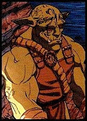
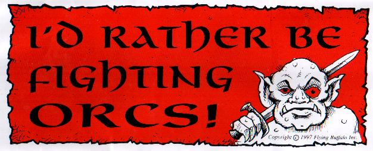

Dracon Warren
 A Tunnels & Trolls homepage This site is named after the home of my first T&T character,Taran "Sniper Orc" Dracon, orc warrior. See picture, right.

- Me and T&T (this page)
- Goblins in the Mist (2000) T&T game archive
- Reward for the Hands of Theives (2001-2005) T&T game archive
- The Orchives of Trollgod's Trollhalla Adventures
Last updated June 4, 2023 |
Contact: brassaf at gmail dot com
My first exposure to Tunnels & Trolls was through my friend Ken St. Andre, whose web presence drew my attention because of his participation in the creation of the computer role-playing game, Wasteland (the best computer role-playing game of all time), and who is also the principal creator of Tunnels & Trolls. 1997:
Ken started a multi-player play-by-post game of Monsters! Monsters!, a sub-system of Tunnels & Trolls with additional rules for the non-traditional player races. He encouraged me to step up to the plate, and thus, Taran Dracon, orc warrior was born. Unfortunately, the game, which we have named "Agents of Lerotra'hh," was never finished. 1998:
My older brother jaxdracon, aka Jax Dracon, and I are determined to finish the story through our own devices. I have put together a page detailing the status of the characters in that game as sort of a mental bookmark to reference as we finish the story and tie together all the plot threads. 1999:
One day, jackspencerjr and I were chatting about Tunnels & Trolls over Yahoo! Instant Messenger and we decided to start a Yahoo! Club for Tunnels & Trolls. Thus, on October 14 A.D. 1999, The Blue Frog Tavern was born, which at its peak boasted over 70 members. 2000:
One day some barflies started chatting using The BFT's message board, and it turned into a grand adventure. Read all about the heroics and blunders of some fine kindreds as they investigate the "Goblins in the Mists," a play-by-post adventure started by kopfy (Thom), finished by khara_khang (Jim), and played out during the months of February 2000 through July 2000, and which I, as editor, have archived on this site. On July 29 A.D. 2000, a disgruntled hacker decided to stir up trouble, and deleted The Blue Frog Tavern along with other Tunnels & Trolls sites around the Internet. In its wake, jackspencerjr created Blue Frog Tavern (no initial "The") on July 30 A.D. 2000, and life goes on. Between July and November of 2000, Taran Dracon took part in another adventure at the BFT. You can read the full adventure at the PBP Archives at: "Lizardmen in Red Water Bay." In September 2000, a few of us started a new adventure but it died after a couple weeks. It was humorously entitled, "The Hobbit Equalizer Dungeon of Doom," and I played a character called Dash Gnarly, who was supposedly a relative of my most favorite AD&D character, Gnash Gnarly. In November, Taran found himself in another adventure. This one was time-travel heavy and of course decided the fate of Khazan. It was "Oblique Streams," and it finally finished up in April of 2001, after several bouts of the GM going missing-in-action. 2001:
2001 was the year Taran's fifth adventure began. "Dangerous Creations" started in June. This adventure co-starred, as usual, Jax, Taran's brother, played by my real-life brother, and also co-starred Titania, a fairy, played by my wife. This made it all the more fun! A new character, whose strings are pulled by my wife and myself, jointly, joined an adventure run at the BFT, named "Hands of Thieves." Her name is Dijani, and she is a rogue. Hopefully I can put up an archive of this adventure one day.... Also in this year, Jack Spencer left for parts unknown, leaving me in charge of the Blue Frog Tavern, which was converted to a Yahoo! Group in 2002. He's since returned but doesn't seem to want to take back ownership of the Group. Fine by me; as sole owner/moderator, the group shouldn't get "accidentally deleted." 2002:
"Dangerous Creations" finished up in March, and "The Pirate Blade of Rhanian," Taran's sixth adventure, began. My wife joined this adventure, too, playing Ebony of Nightshade, a warrior/wizard who pretty much got dumped on by the GM. During the adventure, Taran met up with Cambrea, the elf he'd encountered in the "Lizardmen in Red Water Bay" adventure, and they had a steamy swamp scene after he rescued her from her cruel and unusual form of torture (who knew she had a thing for orcs?). But then she stole his treasure and left for parts unknown. I also joined Ken's Trollhalla, where he gives fans cool stuff in exchange for a $10 annual fee to raise money for T&T's next (seventh) edition. Not a bad deal I think. 2003:
"Pirate Blade" finished up in January, sort of. I wasn't willing to let Taran's cliffhanger-plots go un-plotted until the next khara_khang adventure, so I sought out other adventures with other GMs. Seeking Cambrea and some of his equipment that he left on board a ship they'd boarded early in the last adventure, Taran used some magic that went wrong and ended up in Shrsholn's T&T universe, which was set 150 years in the future of khara_khang's universe, and a different Trollworld altogether anyway. As a result of this magic gone wrong, he moved into the "Reward for the Hands of Thieves / The Chiliad Arch" game in which my wife had been playing Dijani the rogue. 2004:
I have, or rather, Taran has, been writing some orcish poetry of late. The first batch was an homage to his first adventure. I wrote it originally for a T&T web "zine" that never got off the ground, although its remnants can still be found on the Internet. Later I submitted it to another new web zine that made it to print. It's called The Runes of Knowledge, or TROK for short. Taran's poetry appeared in all three 2004 issues:
- January 2004 1st issue: "Forckum Drul-chaser, the Mountain Troll Shaman"
- May 2004 2nd issue: "Pardeloop's Flying Carpet"
Wow, I've known the Trollgod for ten years. That's a long time to know someone you've never met! The Goblin Crag continued. We made it down to level four and some of us to a level below even that, off the map! We lost one player, several others quit when the GM had to leave, but another GM picked up the game and we got some more players. Some of them died already. Mash almost died and may yet do so! In fact he showed up briefly at Dwarfhalla but it was apparently not his time. It's a grand adventure! Three more issues of TROK appeared, and Taran has published poetry in both.
- November 2004 3rd issue: "My Talo Tatto Worm"
- March 2005 4th issue: "My String Puller"
- June 2005 5th issue: "Cambrea, The Naked Elf, Part One"
I'm archiving the cooperative games played by members of Trollhalla. Of course, I had to come up with a catchy name: The Orchives, with apologies to my brother and his PBP Archives! One issue of TROK appeared in 2006, and of course Taran has published another trollku.
- January 2006 6th issue: "Cambrea, The Naked Elf, Part Two"
I entered Taran's Trollhalla personality in Trollgod's latest crazy adventure, Naked Doom, retitled Wacky Racers! Will he win? Forget win, will he survive? The Future:
Dave and I have not made any progress in a the last several years on completing and re-archiving the story from KStA's T&T M!M! game, despite great plans to do so. However, we thought of a few easier ways to wrap up some things, in light of their encounter with the Death Goddess in "Dangerous Creations." One day (year, decade?), Ken, we'll wrap it up.

A scan of the bumper sticker I won through a
contest at Flying Buffalo Inc's website!
{kind=link}